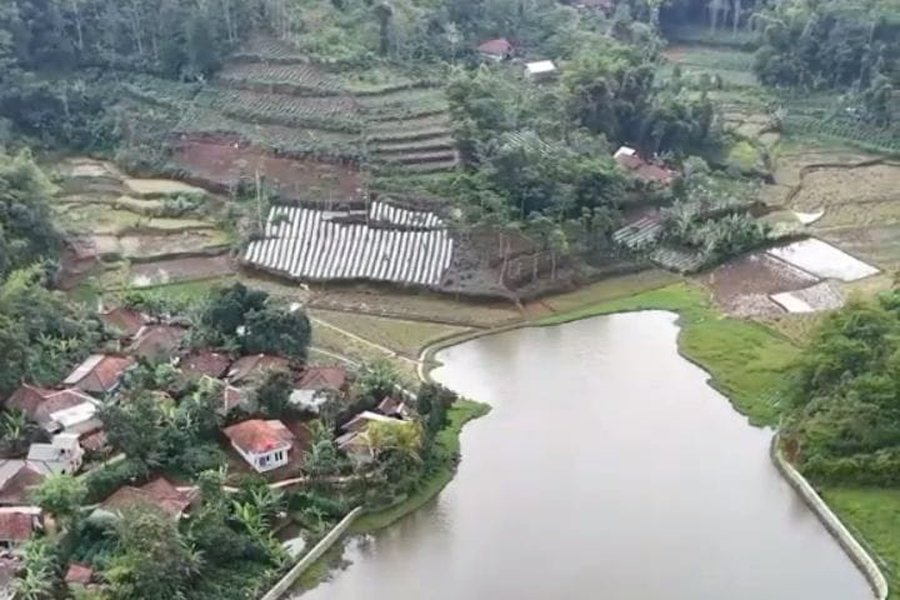
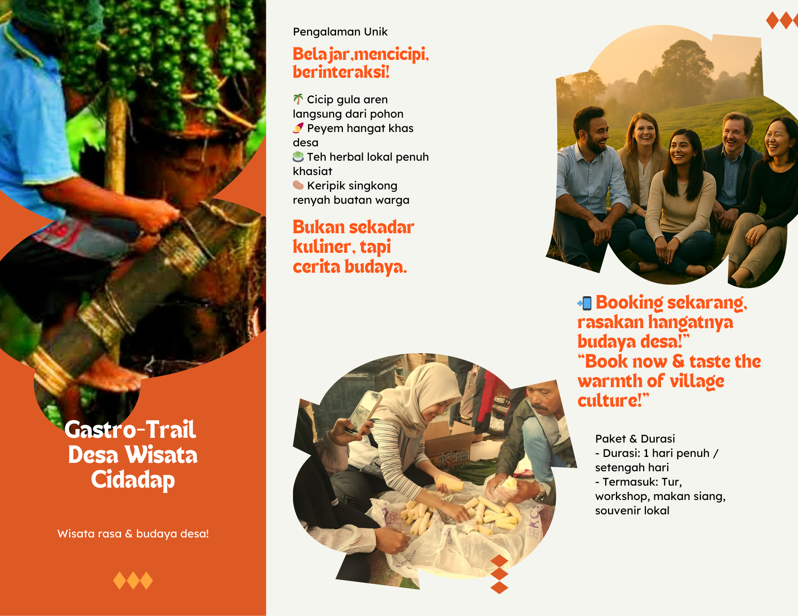

Program Walking Trail Desa Wisata Cidadap mengajak Anda menyusuri keindahan alam desa yang autentik — dari hamparan sawah hijau, kebun kopi Robusta, hutan bambu tropis, hingga Situ Cibeureum yang memukau. Dipandu oleh warga lokal yang ramah dan berpengalaman.

Rute 1
🌾 Panorama Sawah & Jembatan
🌿 Mudah⏱ 1–1.5 Jam📏 ~2 Km👶 Cocok Keluarga
Rute ramah untuk pemula dan keluarga. Menyusuri jalan setapak di sela hamparan sawah hijau, melewati jembatan irigasi dengan panorama gunung yang memukau, dan berinteraksi dengan petani lokal.
📍 Checkpoint Jalur
1
Start: Bale Desa Cidadap
Titik kumpul dan briefing pemandu
2
Jembatan Irigasi
Spot foto terbaik dengan latar sawah & gunung
3
Sudut Pandang Sawah
Area istirahat, snack lokal tersedia
4
Kampung Warga
Interaksi dengan petani & aktivitas pertanian
5
Finish: Warung Desa
Istirahat & kuliner lokal

Rute 2
🌲 Hutan Tropis & Kebun Kopi
🌲 Moderat⏱ 2–3 Jam📏 ~4 Km☕ Coffee Deck
Menelusuri kebun sayuran organik, perkebunan Kopi Robusta Cidadap, hutan bambu yang sejuk, dan berakhir di Coffee Deck — menikmati kopi segar langsung di tengah kebun kopi.
Rute 3
⛰️ Perbukitan & Situ Cibeureum
⛰️ Menantang⏱ 3–4 Jam📏 ~8 Km💪 Aktif & Fit
Mendaki perbukitan hijau dengan panorama 360°, melewati tebing erosi merah yang dramatis, dan berakhir di tepian Situ Cibeureum untuk wisata mancing atau rakit apung.
Destinasi Istimewa
☕ Coffee Deck Cidadap
Pengalaman unik menikmati kopi Robusta Cidadap yang baru dipetik dan diseduh langsung di persimpangan kebun kopi yang dikelilingi pepohonan tropis yang rindang.
Kopi Tubruk Cidadap
Rp 8.000
Robusta lokal + gula aren
Kopi Susu Gula Aren
Rp 12.000
Espresso + susu segar
Teh Kumis Kucing
Rp 7.000
Herbal lokal segar
Pisang Goreng Madu
Rp 6.000
Pisang lokal pilihan
Kue Semprong
Rp 5.000
Kue tradisional desa
Singkong Rebus
Rp 5.000
+ kelapa parut
Destinasi Rute 3
🎣 Situ Cibeureum
Danau alami Situ Cibeureum menawarkan wisata mancing yang menenangkan di tepi danau yang indah, dengan latar pegunungan Cianjur yang memukau.
🛶
Rakit Apung Situ Cibeureum
Bersantai di atas rakit bambu sambil menikmati pemandangan danau & pegunungan Cidadap
Panduan Wisatawan
Info Praktis
💼 Yang Dibawa
Sepatu anti-slip
Air minum 1L+
Topi & sunscreen
Jas hujan lipat
Kamera / HP
Uang tunai
📋 Syarat
Usia min. 8 tahun
Kondisi fisik sehat
Maks 20 orang/grup
Wajib ikut briefing
Reservasi 3 hari sebelum
🚫 Dilarang
Buang sampah sembarangan
Merusak tanaman
Tinggalkan rombongan
Petik tanaman sendiri
Bawa hewan peliharaan
💰 Harga
Rute 1: Rp 25.000/org
Rute 2: Rp 35.000/org
Rute 3: Rp 50.000/org
Paket Grup diskon 15%
Sudah termasuk pemandu
Siap Menjelajah?
Hubungi kami untuk reservasi dan informasi lebih lanjut. Pemandu lokal siap menemani perjalanan Anda.